Hummus and Veggie Platter
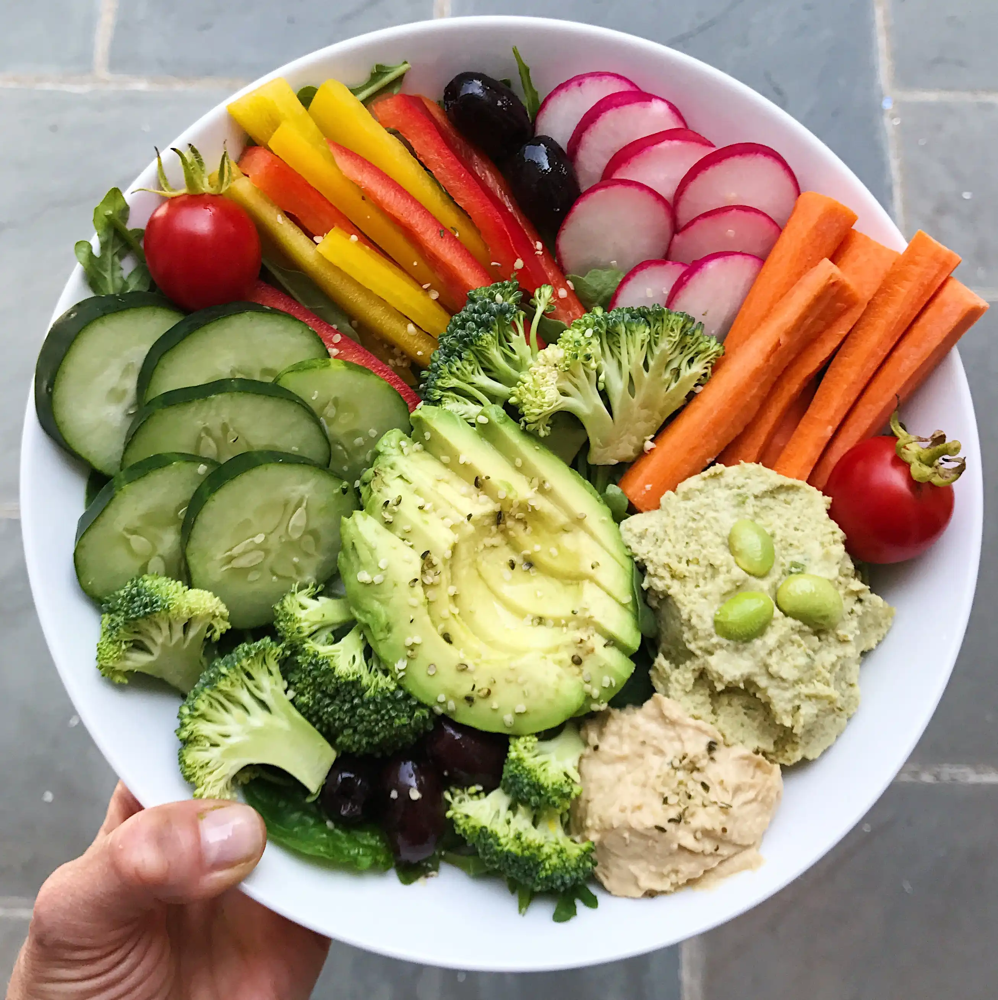
Ingredients:
- 1 cup (240g) hummus
- 1 cucumber, sliced
- 1 bell pepper, sliced
- 1 carrot, cut into sticks
- 1 cup (150g) cherry tomatoes
Tutorial:
Arrange the sliced vegetables on a platter and serve with hummus for dipping.
Tips:
Try adding pita bread or crackers for variety.
Caprese Skewers
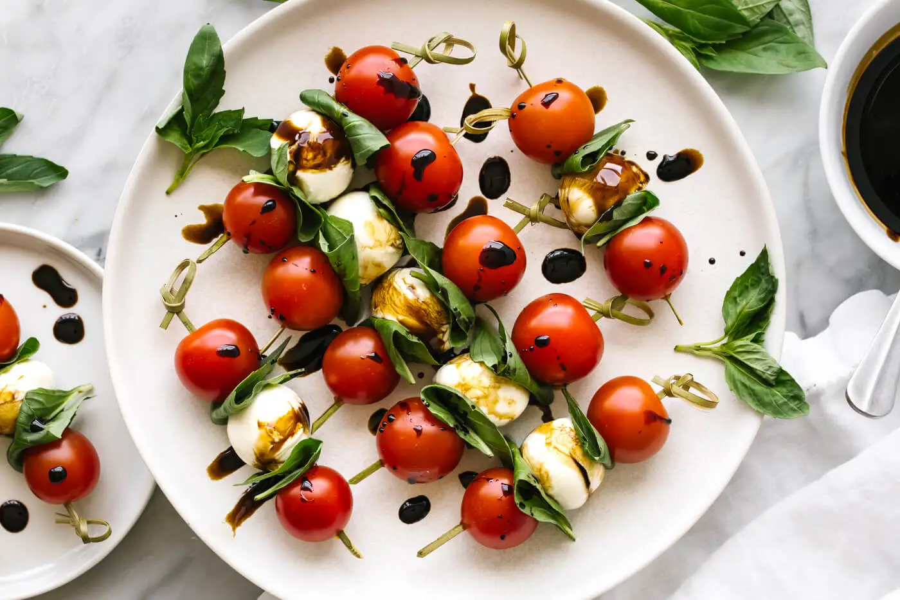
Ingredients:
- 1 cup (150g) cherry tomatoes
- 1 cup (150g) mozzarella balls
- Fresh basil leaves
- Balsamic glaze for drizzling
- Salt and pepper to taste
Tutorial:
Skewer a cherry tomato, basil leaf, and mozzarella ball onto toothpicks. Drizzle with balsamic glaze.
Tips:
Chill before serving for a refreshing bite.
Stuffed Mini Peppers
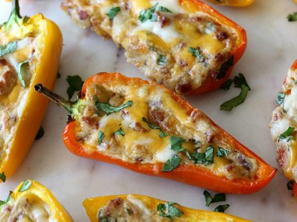
Ingredients:
- 10 mini bell peppers, halved
- 1 cup (150g) cream cheese, softened
- 1/4 cup (40g) chives, chopped
- Salt and pepper to taste
Tutorial:
Mix cream cheese with chives, salt, and pepper. Fill each pepper half with the mixture.
Tips:
Serve chilled or at room temperature.
Guacamole and Whole Wheat Tortilla Chips
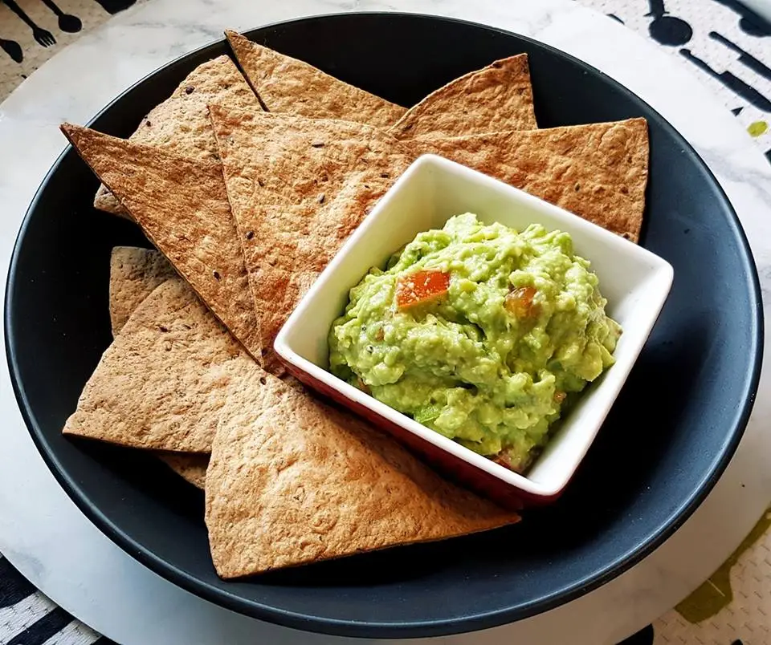
Ingredients:
- 2 ripe avocados
- 1 lime, juiced
- 1 tomato, diced
- 1/4 onion, chopped
- Whole wheat tortilla chips for serving
Tutorial:
Mash avocados, mix in lime juice, tomato, onion, and season to taste. Serve with tortilla chips.
Tips:
Keep the pit in the guacamole to help prevent browning.
Mini Quiches
Ingredients:
- 6 eggs
- 1 cup (240ml) milk
- 1 cup (150g) mixed vegetables (spinach, bell peppers, onions)
- Salt and pepper to taste
- 1 cup (100g) cheese (optional)
Tutorial:
Whisk eggs and milk, mix in vegetables, cheese, salt, and pepper. Pour into muffin tins and bake until set.
Tips:
Use muffin liners for easy removal.
Bruschetta with Tomato and Basil
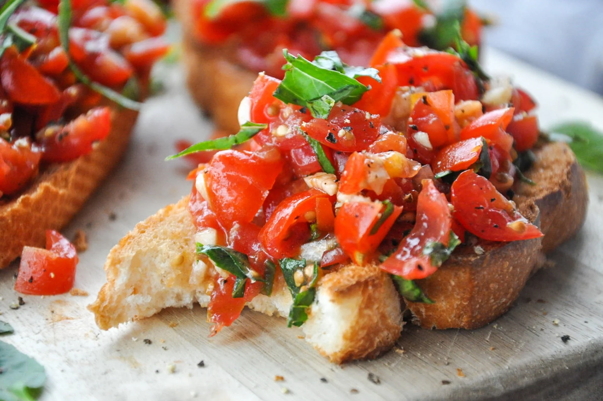
Ingredients:
- 1 baguette, sliced
- 2 cups (300g) diced tomatoes
- 1/4 cup (60ml) olive oil
- Fresh basil leaves, chopped
- Salt and pepper to taste
Tutorial:
Toast baguette slices. Mix tomatoes with olive oil, basil, salt, and pepper. Top toasted bread with the mixture.
Tips:
Serve immediately to keep bread crispy.
Cucumber Bites with Cream Cheese and Dill
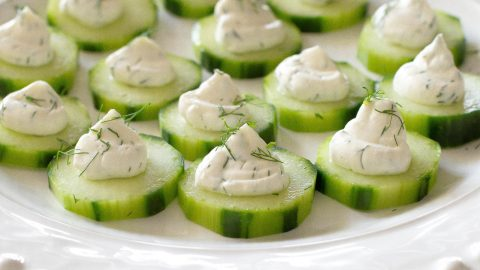
Ingredients:
- 1 cucumber, sliced
- 1/2 cup (120g) cream cheese
- 1 tbsp dill, chopped
- Salt and pepper to taste
Tutorial:
Spread cream cheese on cucumber slices and sprinkle with dill, salt, and pepper.
Tips:
For variety, top with smoked salmon or cherry tomatoes.
Avocado Deviled Eggs
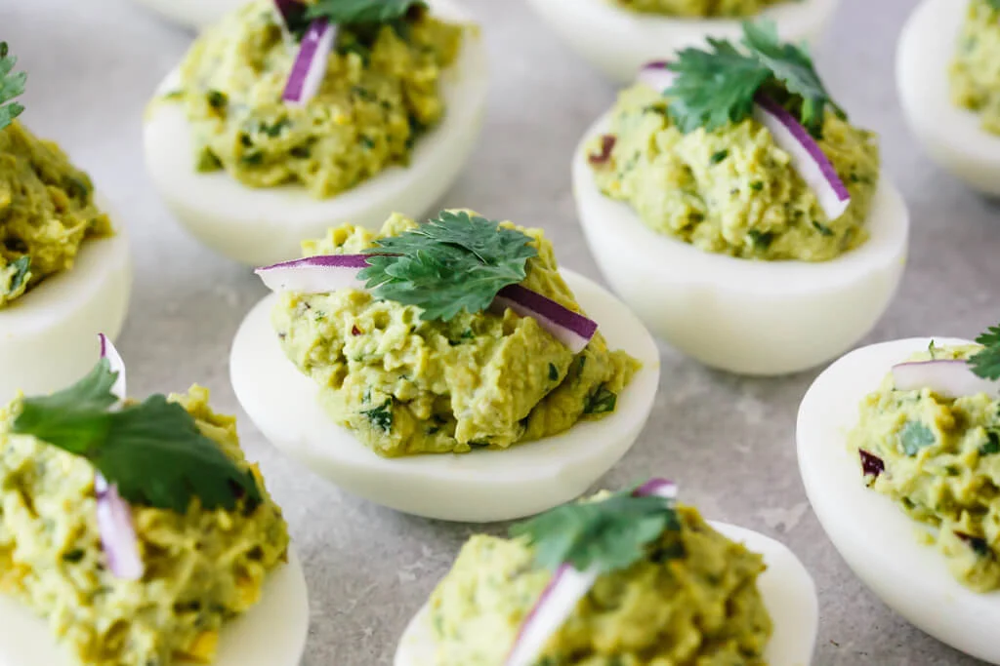
Ingredients:
- 6 hard-boiled eggs, halved
- 1 avocado, mashed
- 1 tsp lime juice
- Salt and pepper to taste
Tutorial:
Mix egg yolks with mashed avocado and lime juice. Spoon mixture back into egg whites.
Tips:
Sprinkle with paprika for extra flavor.
Grilled Zucchini Roll-Ups
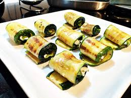
Ingredients:
- 2 zucchinis, sliced thin
- 1/2 cup (120g) ricotta cheese
- Salt and pepper to taste
Tutorial:
Grill zucchini slices, spread with ricotta, and roll up.
Tips:
Secure with a toothpick and serve warm.
Edamame with Sea Salt
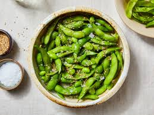
Ingredients:
- 2 cups (300g) edamame, in pods
- Sea salt to taste
Tutorial:
Boil edamame for 5 minutes and sprinkle with sea salt before serving.
Tips:
Try adding a dash of chili flakes for heat.
Baked Veggie Chips
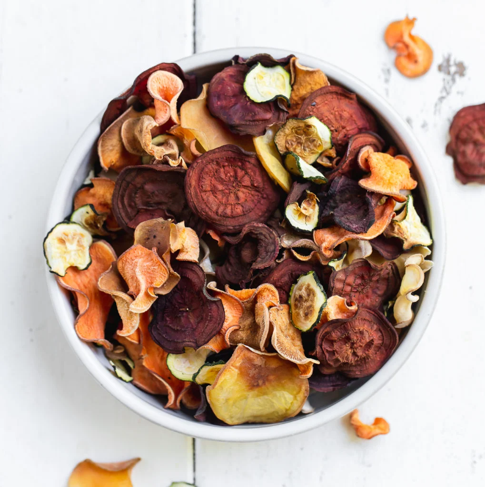
Ingredients:
- 2 zucchinis, sliced thin
- 1 sweet potato, thinly sliced
- 2 tbsp olive oil
- Salt to taste
Tutorial:
Toss sliced vegetables in olive oil and bake until crispy.
Tips:
Use a mandoline for even slices.
Smoked Salmon Cucumber Rolls
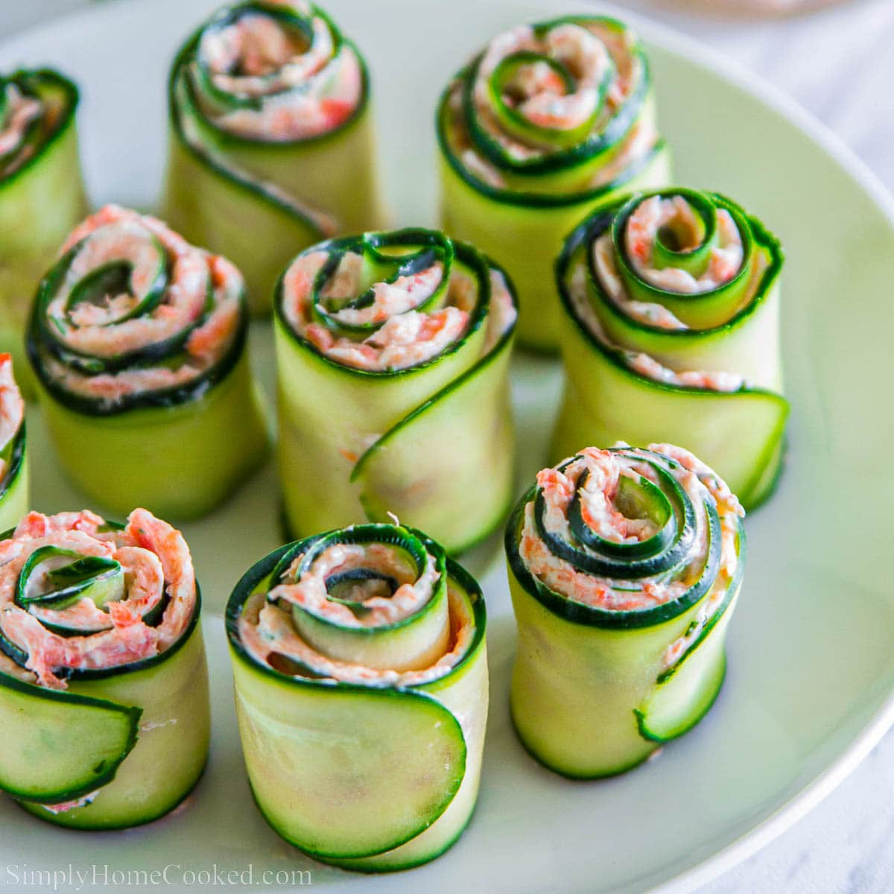
Ingredients:
- 1 cucumber, sliced thin
- 100g smoked salmon
- 2 tbsp cream cheese
Tutorial:
Spread cream cheese on cucumber slices and wrap with smoked salmon.
Tips:
Garnish with dill or capers.